1. Extensión profunda de cuello y mandíbula desde rodillas
 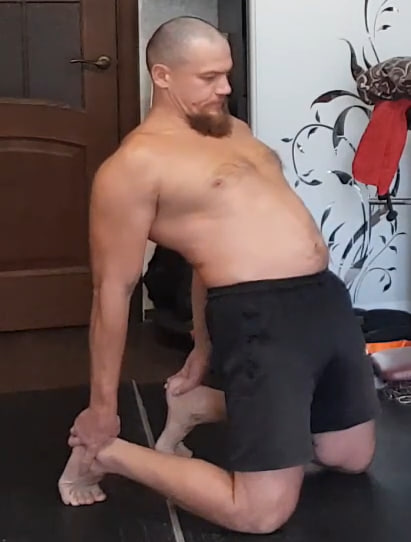
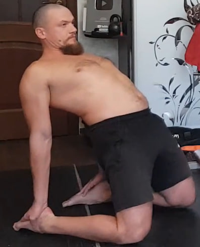
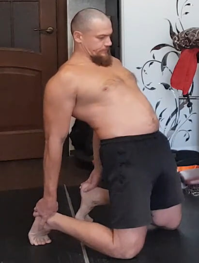
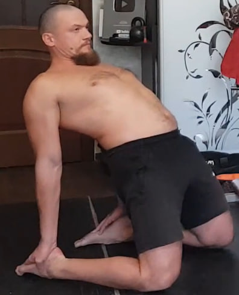
Arrodíllate y siéntate sobre los pies. Si la movilidad aún no es suficiente, puedes mantener los dedos de los pies apoyados en el suelo; la forma ideal es con los empeines completamente apoyados. Desde ahí reclina el torso hacia atrás y apoya las manos en los talones. Lleva la cabeza al máximo hacia atrás, abre la boca tan ampliamente como puedas y luego ciérrala lentamente con la misma tensión. Después inclina la cabeza hacia adelante y mantén la barbilla pegada al pecho durante 10 tiempos. Vuelve a la posición inicial y repite el ciclo durante 10 repeticiones.
2. Isometría de cuello con almohada bajo el mentón

Coloca una almohada o una toalla enrollada entre el mentón y la parte alta del pecho. La boca permanece cerrada, pero sin apretar los dientes. Tira de la almohada hacia abajo con las manos como si quisieras arrancarla, mientras el mentón se opone y no deja que el objeto se deslice. Respira con calma. Mantén la tensión isométrica durante 10 segundos, relaja y repite 10 veces.
3. Isometría frontal del cuello con bloqueo de las manos
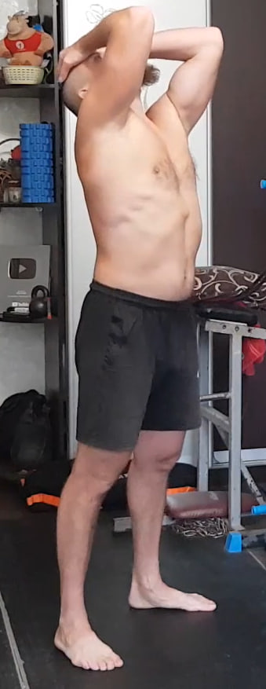
Entrelaza las manos y colócalas sobre la parte superior de la frente. Echa ligeramente la cabeza hacia atrás: sin las manos podrías inclinar la cabeza hacia adelante, pero ahora las palmas crean un bloqueo total. Empuja la frente contra las manos, intentando llevar la cabeza hacia adelante sin permitir movimiento alguno. Mantén la presión durante 10 segundos, descansa y realiza 10 repeticiones.
4. Isometría diagonal del cuello con apoyo de una mano
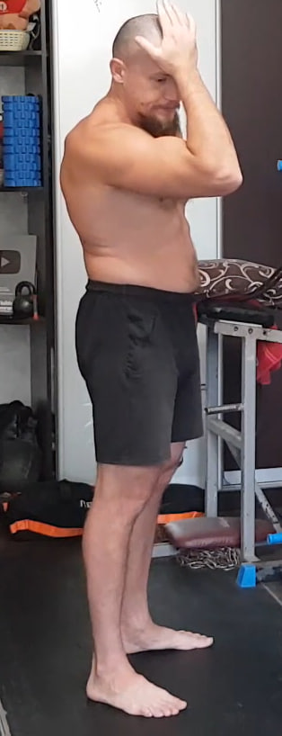Inclina ligeramente la cabeza hacia adelante y gírala hacia el lado de la mano que ofrece la resistencia. Coloca la palma sobre la parte frontal-lateral de la cabeza. Intenta inclinar y girar la cabeza aún más hacia esa mano, mientras la palma bloquea completamente el movimiento. Respira de forma tranquila. Mantén la tensión durante 10 segundos y realiza 10 repeticiones por cada lado.
5. Isometría de rotación del cuello con apoyo en el pómulo
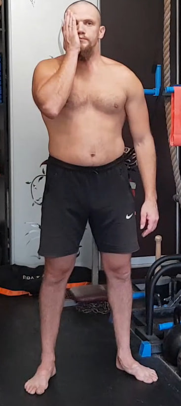

Coloca la palma directamente sobre el pómulo, no sobre la mandíbula, para que la fuerza se transmita al cráneo y no a los dientes. Gira ligeramente la cabeza hacia la mano y, desde ahí, intenta rotarla aún más hacia ese lado mientras la palma bloquea por completo el movimiento. La cabeza no debe moverse: toda la tensión es interna. Mantén la presión durante 10 segundos y realiza 10 repeticiones por cada lado.
6. Isometría de inclinación lateral del cuello
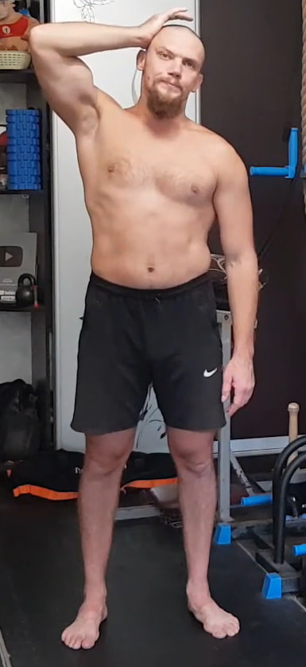Inclina ligeramente la cabeza hacia un lado y coloca la palma en la parte lateral-superior de la cabeza. Intenta inclinar la cabeza aún más hacia ese mismo lado mientras la mano lo impide por completo. No debe haber desplazamiento visible. Mantén una respiración tranquila, sostén la tensión durante 10 segundos y realiza 10 repeticiones por cada lado.
7. “Aplastar el coco” entre las escápulas

Entrelaza las manos detrás de la espalda y lleva los codos hacia atrás lo máximo posible. Imagina que tienes un coco entre las escápulas y que debes no solo apretarlo, sino romperlo con la fuerza de la parte media de la espalda. Aprieta con toda tu fuerza, sin arquear en exceso la zona lumbar y manteniendo la respiración tranquila. Mantén la contracción durante 10 segundos, relaja y repite 10 veces.
8. Isometría del dorsal ancho (parte externa)

Coloca un brazo totalmente recto detrás de la espalda. Con la otra mano sujeta firmemente la muñeca o el antebrazo del brazo de trabajo, creando un punto de agarre sólido. Desde esta posición intenta llevar el brazo recto hacia tu cuerpo, mientras la parte externa del dorsal ancho se opone y no permite que el brazo se acerque. Ajusta ligeramente la altura de los brazos hasta sentir la contracción clara en el lateral de la espalda. Mantén la tensión durante 10 segundos y realiza 10 repeticiones por cada lado.
9. Estiramiento final de la espalda
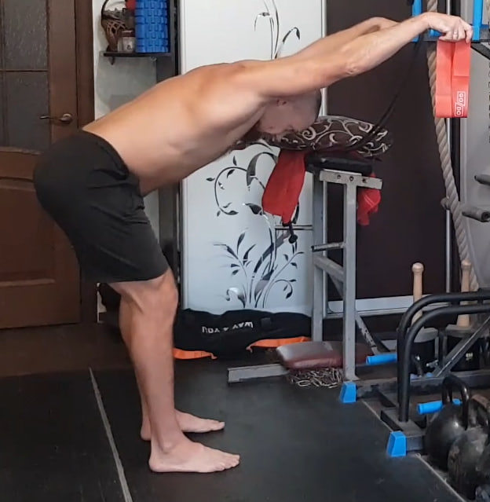Al terminar la serie isométrica realiza un único estiramiento para liberar la tensión acumulada en la espalda. Inclínate hacia adelante apoyando las manos en una superficie estable y estira los brazos por completo. Lleva la cadera hacia atrás para alargar la columna y permite que la musculatura se relaje de forma natural. Mantén la posición unos segundos respirando con calma. Este estiramiento se realiza solo una vez como cierre del bloque.
10. Isometría del dorsal ancho (zona externa inferior)

Coloca las manos entrelazadas detrás de la espalda un poco más abajo que la línea de la cintura. Mantén los brazos rectos o casi rectos y lleva ligeramente los codos hacia atrás. Desde esta posición intenta tirar de los brazos hacia adentro y hacia arriba mientras la zona externa e inferior del dorsal ancho se opone y evita cualquier movimiento. La contracción debe sentirse en el lateral bajo de la espalda, justo debajo de las costillas. Mantén la isometría durante 10 segundos, descansa brevemente y realiza 10 repeticiones.
11. Elevaciones de espalda con pausa isométrica
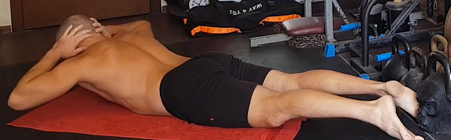Acuéstate boca abajo con las piernas estiradas y las manos entrelazadas detrás de la cabeza. Desde esta posición eleva el pecho, los codos y la parte superior del torso lo más que puedas, manteniendo las piernas rectas y activas. En la posición más alta mantén una pausa isométrica de 10 segundos, respirando de forma tranquila. Luego baja con control y repite. Realiza 10 repeticiones, cada una con su pausa de 10 segundos arriba.
12. Inclinaciones hacia el suelo con piernas rectas

Colócate de pie con las piernas completamente rectas y los pies al ancho de las caderas. Inclina el torso hacia adelante llevando la cadera hacia atrás e intentando tocar el suelo con las manos sin doblar las rodillas. Después vuelve a ponerte de pie estirando todo el cuerpo. Realiza el ciclo completo —inclinación y extensión— 10 veces con un ritmo tranquilo.
13. Isometría de elevación de rodilla para glúteo y bíceps femoral

Levanta una pierna lo más alto posible, llevando la rodilla hacia el pecho. Sujeta la pierna con ambas manos, creando un punto de bloqueo firme. Desde esa posición intenta elevar la pierna aún más mientras las manos lo impiden por completo. La tensión debe sentirse en el glúteo y en la parte posterior del muslo. Mantén la contracción isométrica durante 10 segundos en cada repetición y realiza 10 repeticiones por cada pierna.
14. Elevación isométrica de pierna recta a 90 grados
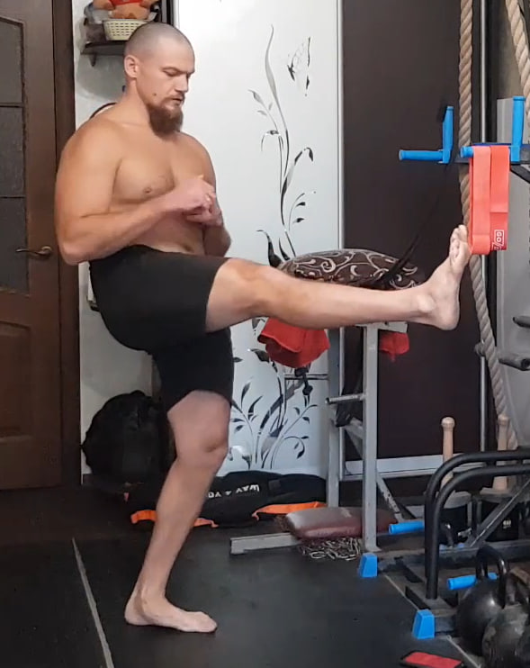Levanta una pierna completamente recta hacia adelante e intenta llevarla hasta 90 grados con respecto al torso, o hasta donde tu movilidad lo permita. La pierna de apoyo puede estar ligeramente flexionada, pero la espalda debe mantenerse lo más recta posible. Una vez alcanzada la altura máxima, mantén la pierna en el aire durante 10 segundos. Regresa con control y repite. Realiza 10 repeticiones por cada lado.
15. Saltos en posición de plancha


Comienza en posición de plancha con los brazos extendidos y el abdomen firme. Desde ahí salta llevando los pies hacia adelante debajo del pecho y luego salta de nuevo para volver a la plancha. Mantén la cadera estable y evita que la zona lumbar se hunda. Realiza 10 saltos seguidos con un ritmo elástico y continuo.
16. Extensiones isométricas de pierna hacia atrás para glúteo

Ponte de pie con la espalda completamente recta, evitando inclinarte hacia adelante. Desde esta postura lleva una pierna recta hacia atrás, creando tensión en el glúteo. Aprieta el glúteo con la máxima fuerza posible durante 10 segundos y luego cambia de pierna. Realiza 10 repeticiones por cada lado.
17. Burpees sin flexiones

 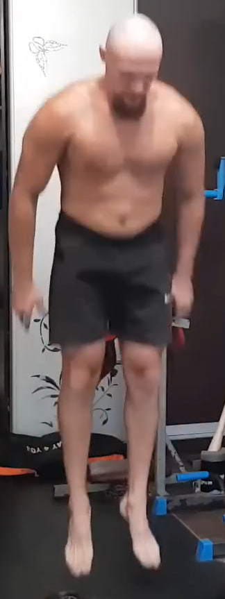
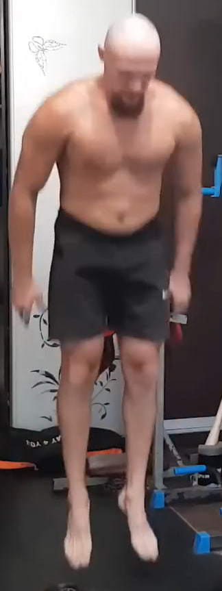
Colócate de pie y luego baja apoyando las manos en el suelo para saltar hacia atrás a la posición de plancha. Desde ahí salta llevando los pies hacia adelante debajo del pecho y realiza un pequeño salto vertical para volver a la posición inicial. El movimiento debe ser continuo y sin detenerse. No se realizan flexiones en este ejercicio. Completa 10 repeticiones.